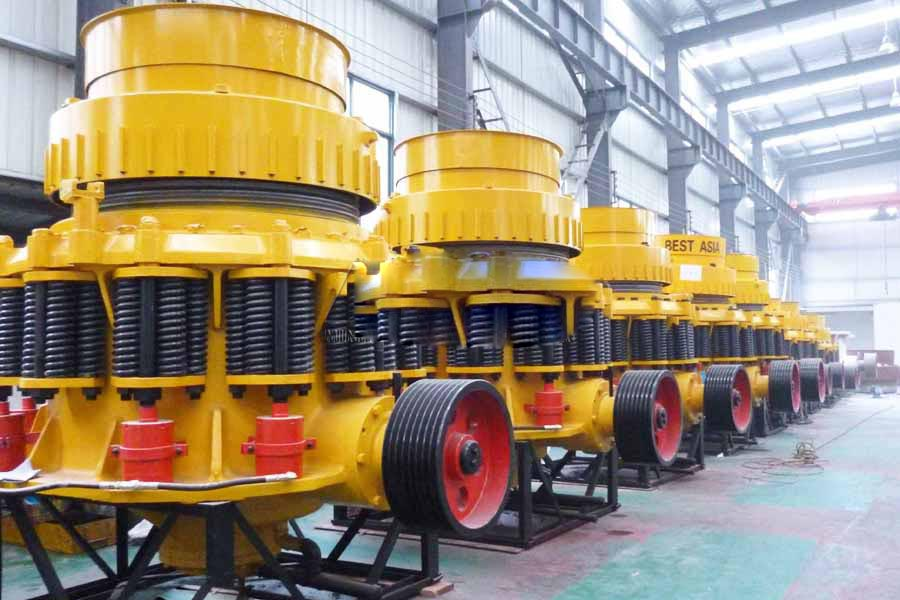

Construction waste crushing production line

Mobile construction waste crushing station for urban construction waste crushing.
calcite powder grinding mill
calcite powder grinding mill. Calcite production line, now on the market for the processing of calcite customer demand, we launched a special series of calcite mill equipment to meet a range of 100 mesh -1500 Head calcite powder processing, large pieces of calcite silo consists of vibrating feeder uniformly feeding a broken (jaw crusher) coarsely chopped, calcite after crushing by conveyor belt to the second break (crusher or cone crusher) for further crushing; be grinding after crushing.
Calcite powder production equipment and processing technology, calcite name comes easily along their cleavage broken into square pieces. More commonly calcite white or colorless, colorless, transparent calcite is also called Iceland spar.

Introduction of calcite:
Calcite is a carbonate mineral and the most stable polymorph of calcium carbonate, like most carbonates, will dissolve with most forms of acid. It has a defining Mohs hardness of 3, a specific gravity of 2.71, and its luster is vitreous in crystallized varieties. Calcite is one of the most important minerals. The properties of calcite make it extremely useful as: construction materials, abrasives, agricultural soil treatments, construction aggregates, pigments, pharmaceuticals and more.
Our crusher for Calcite:
As to the calcite crushing ,we company recommend you the jaw crusher, impact crusher, cone crusher and so on. And you can also use our matched grinding equipment such as the ball mill and vertical roller mill if you have higher requirement about the final particle size. As the largest manufacturer of mining and crushing equipment in China, we provide quality after-sales service with much successful production experience. And the calcite production line will also bring you the most benefits !
Ethiopia calcite crusher supplier. Calcite mill, calcite mill, milling equipment calcite, calcite European version of the mill chunks of calcite by jaw crusher to the desired size, the hoist will calcite sent to storage hopper, and then the vibration feeder machine continuously fed material evenly quantitative calcite European ladder mill grinding mill indoors.
Crushing process of Calcite:
The calcite will be entered the jaw crusher by the vibrating feeder, and then be entered the vibrating screen by the belt conveyor to receive the screening. And after the crushing, the particle will be entered the secondary or tertiary crushing equipment to receive the screening and be transferred to the specific site by the belt conveyor(instruction as follows ).
Raw materials of Calcite –> vibrating feeder –> Jaw crusher –> impact crusher –> vibrating screen –>belt conveyor –> Final products of Calcite
Calcite processing equipment, calcite crusher, sand making calcite, calcite jaw crusher is a motor driven by the motor pulley driven by the belt and sheave eccentric shaft, so that the jaw is reciprocated by a predetermined trajectory.
Ethiopia calcite crusher price. How much calcite crusher machine, crusher calcite calcite applications is very broad, calcite prior to use to go through crushing, fine grinding and other processing, cone crusher is the most common calcite crusher, calcite crusher is mainly used for marble .
Leave Me A Message, Now
If you have any questions regarding equipment prices, production line configuration or other problems, you can send a message to us, we will contact you soon.